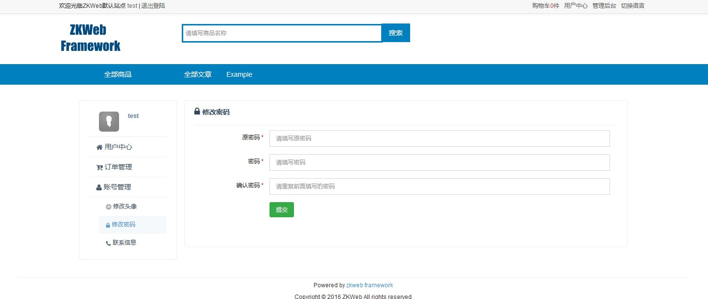
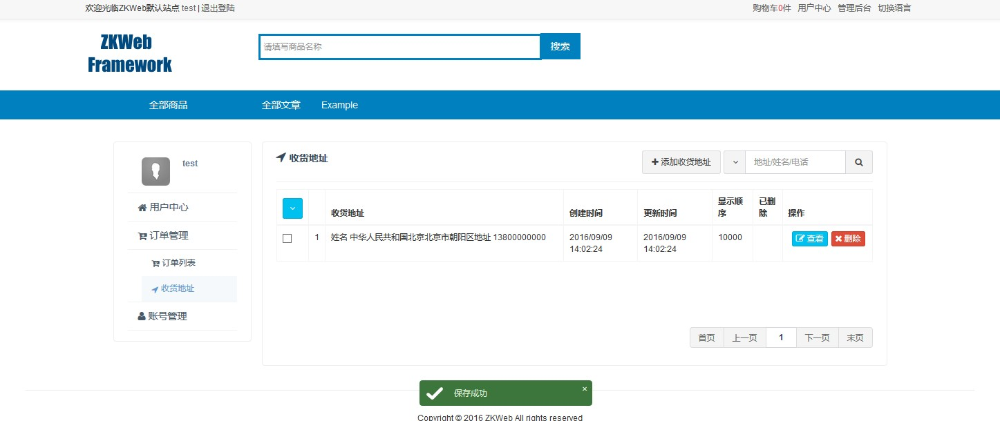

用户中心 (Common.UserPanel)
前台会员中心提供了前台用户登录后使用的面板页面。
前台会员中心也基于菜单页插件实现。
前台会员中心的效果

如何添加前台会员中心页（表单）
添加前台会员中心页需要继承FormUserPanelControllerBase。
以下是修改密码的源代码，可以参考实现自己的设置页面。
/// <summary>
/// 修改自身密码的表单
/// </summary>
[ExportMany]
public class ChangePasswordForm : FormUserPanelControllerBase {
public override string Group { get { return "Account Manage"; } }
public override string GroupIconClass { get { return "fa fa-user"; } }
public override string Name { get { return "Change Password"; } }
public override string IconClass { get { return "fa fa-lock"; } }
public override string Url { get { return "/home/change_password"; } }
protected override IModelFormBuilder GetForm() { return new Form(); }
/// <summary>
/// 表单
/// </summary>
public class Form : ModelFormBuilder {
/// <summary>
/// 原密码
/// </summary>
[Required]
[StringLength(100, MinimumLength = 5)]
[PasswordField("OldPassword", "Please enter old password")]
public string OldPassword { get; set; }
/// <summary>
/// 密码
/// </summary>
[Required]
[StringLength(100, MinimumLength = 5)]
[PasswordField("Password", "Please enter password")]
public string Password { get; set; }
/// <summary>
/// 确认密码
/// </summary>
[Required]
[StringLength(100, MinimumLength = 5)]
[PasswordField("ConfirmPassword", "Please repeat the password exactly")]
public string ConfirmPassword { get; set; }
/// <summary>
/// 绑定表单
/// </summary>
protected override void OnBind() { }
/// <summary>
/// 提交表单
/// </summary>
/// <returns></returns>
protected override object OnSubmit() {
if (Password != ConfirmPassword) {
throw new BadRequestException(new T("Please repeat the password exactly"));
}
var sessionManager = Application.Ioc.Resolve<SessionManager>();
var session = sessionManager.GetSession();
var userId = session.ReleatedId.Value;
var userManager = Application.Ioc.Resolve<UserManager>();
userManager.ChangePassword(userId, OldPassword, Password);
return this.SaveSuccess();
}
}
}
如何添加前台会员中心页（列表）
前台会员中心页也可以添加列表形式的页面，需要继承CrudUserPanelControllerBase。
以下是收货地址的源代码，可以参考实现自己的设置页面。
这里的数据会自动按所属人过滤，保存时也会自动做出安全检查（参考ConcernEntityOwnership属性）

/// <summary>
/// 前台的收货地址管理的控制器
/// </summary>
[ExportMany]
public class ShippingAddressCrudController : CrudUserPanelControllerBase<ShippingAddress, Guid> {
public override string Group { get { return "OrderManage"; } }
public override string GroupIconClass { get { return "fa fa-cart-arrow-down"; } }
public override string Name { get { return "ShippingAddress"; } }
public override string Url { get { return "/user/shipping_address"; } }
public override string IconClass { get { return "fa fa-location-arrow"; } }
public override string EntityTypeName { get { return Name; } }
protected override IAjaxTableHandler<ShippingAddress, Guid> GetTableHandler() { return new TableCallback(); }
protected override IModelFormBuilder GetAddForm() { return new Form(); }
protected override IModelFormBuilder GetEditForm() { return new Form(); }
/// <summary>
/// 表单回调
/// </summary>
public class TableCallback : AjaxTableHandlerBase<ShippingAddress, Guid> {
/// <summary>
/// 构建表格
/// </summary>
public override void BuildTable(
AjaxTableBuilder table, AjaxTableSearchBarBuilder searchBar) {
table.StandardSetupFor<ShippingAddressCrudController>();
searchBar.StandardSetupFor<ShippingAddressCrudController>("Address/Name/Tel");
}
/// <summary>
/// 过滤数据
/// </summary>
public override void OnQuery(
AjaxTableSearchRequest request, ref IQueryable<ShippingAddress> query) {
if (!string.IsNullOrEmpty(request.Keyword)) {
query = query.Where(q => q.Summary.Contains(request.Keyword));
}
}
/// <summary>
/// 选择数据
/// </summary>
public override void OnSelect(
AjaxTableSearchRequest request, IList<EntityToTableRow<ShippingAddress>> pairs) {
foreach (var pair in pairs) {
pair.Row["Id"] = pair.Entity.Id;
pair.Row["ShippingAddress"] = pair.Entity.Summary;
pair.Row["CreateTime"] = pair.Entity.CreateTime.ToClientTimeString();
pair.Row["UpdateTime"] = pair.Entity.UpdateTime.ToClientTimeString();
pair.Row["DisplayOrder"] = pair.Entity.DisplayOrder;
}
}
/// <summary>
/// 添加列和操作
/// </summary>
public override void OnResponse(
AjaxTableSearchRequest request, AjaxTableSearchResponse response) {
response.Columns.AddIdColumn("Id").StandardSetupFor<ShippingAddressCrudController>(request);
response.Columns.AddNoColumn();
response.Columns.AddMemberColumn("ShippingAddress", "40%");
response.Columns.AddMemberColumn("CreateTime");
response.Columns.AddMemberColumn("UpdateTime");
response.Columns.AddMemberColumn("DisplayOrder");
response.Columns.AddEnumLabelColumn("Deleted", typeof(EnumDeleted));
response.Columns.AddActionColumn().StandardSetupFor<ShippingAddressCrudController>(request);
}
}
/// <summary>
/// 添加和编辑收货地址使用的表单
/// </summary>
public class Form : TabEntityFormBuilder<ShippingAddress, Guid, Form> {
/// <summary>
/// 地区
/// </summary>
[RegionEditor("Region")]
public CountryAndRegion Region { get; set; }
/// <summary>
/// 邮政编码
/// </summary>
[TextBoxField("ZipCode")]
public string ZipCode { get; set; }
/// <summary>
/// 详细地址
/// </summary>
[Required]
[TextBoxField("DetailedAddress", "DetailedAddress")]
[StringLength(1000, MinimumLength = 1)]
public string DetailedAddress { get; set; }
/// <summary>
/// 收货人姓名
/// </summary>
[Required]
[TextBoxField("Fullname", "Fullname")]
[StringLength(100, MinimumLength = 1)]
public string ReceiverName { get; set; }
/// <summary>
/// 收货人电话/手机
/// </summary>
[Required]
[TextBoxField("TelOrMobile", "TelOrMobile")]
[StringLength(100, MinimumLength = 1)]
public string ReceiverTel { get; set; }
/// <summary>
/// 显示顺序
/// </summary>
[Required]
[TextBoxField("DisplayOrder", "Order from small to large")]
public long DisplayOrder { get; set; }
/// <summary>
/// 备注
/// </summary>
[TextAreaField("Remark", 5, "Remark")]
public string Remark { get; set; }
/// <summary>
/// 绑定表单
/// </summary>
protected override void OnBind(ShippingAddress bindFrom) {
Region = new CountryAndRegion(bindFrom.Country, bindFrom.RegionId);
ZipCode = bindFrom.ZipCode;
DetailedAddress = bindFrom.DetailedAddress;
ReceiverName = bindFrom.ReceiverName;
ReceiverTel = bindFrom.ReceiverTel;
DisplayOrder = bindFrom.DisplayOrder;
Remark = bindFrom.Remark;
}
/// <summary>
/// 提交表单
/// </summary>
protected override object OnSubmit(ShippingAddress saveTo) {
saveTo.Country = Region.Country;
saveTo.RegionId = Region.RegionId;
saveTo.ZipCode = ZipCode;
saveTo.DetailedAddress = DetailedAddress;
saveTo.ReceiverName = ReceiverName;
saveTo.ReceiverTel = ReceiverTel;
saveTo.Summary = saveTo.GenerateSummary();
saveTo.DisplayOrder = DisplayOrder;
saveTo.Remark = Remark;
return this.SaveSuccessAndCloseModal();
}
}
}